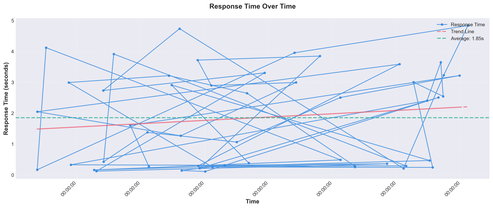
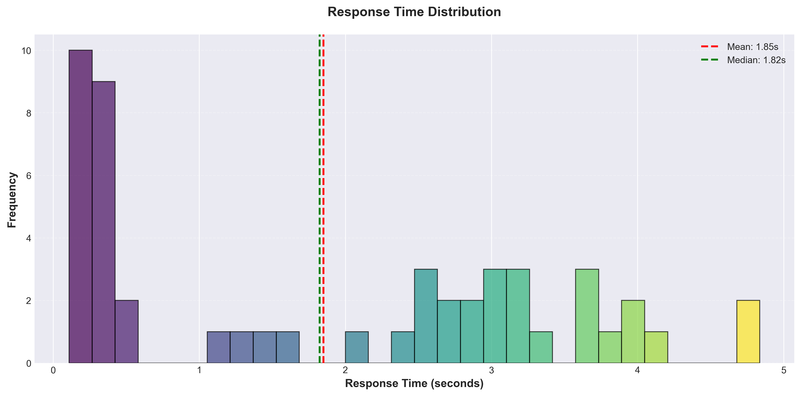
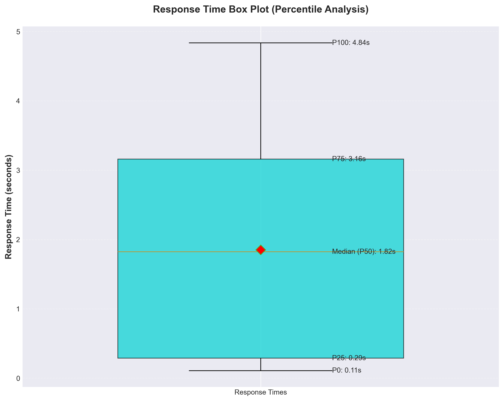
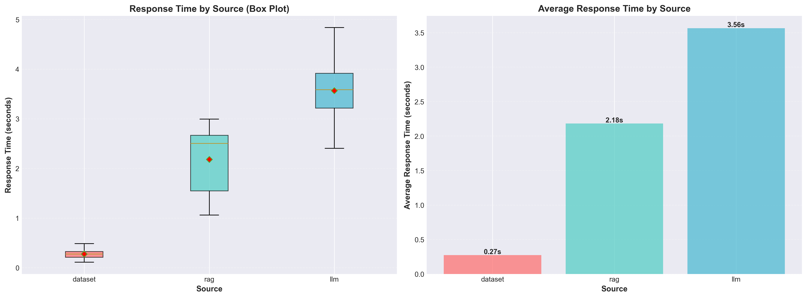
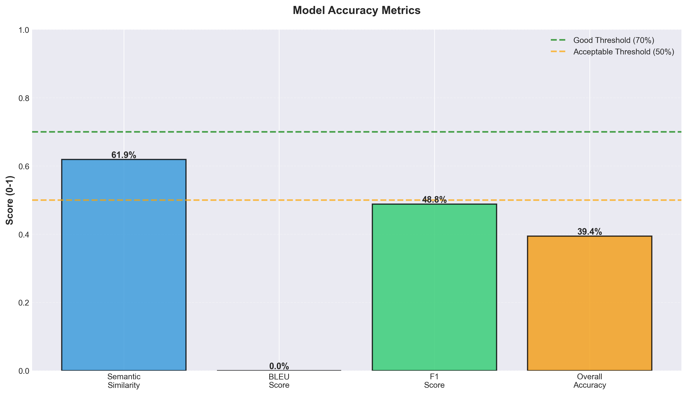
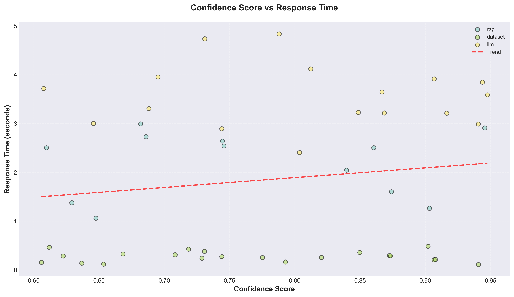
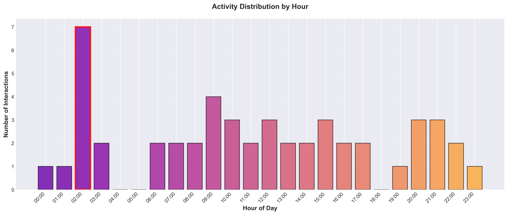
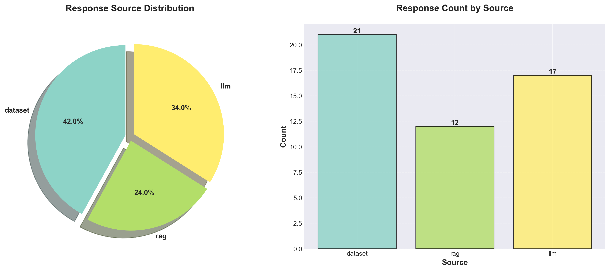

📊 Research Analysis Report
Comprehensive Data Visualization for Academic Research
50
Total Responses
25
Feedback Entries
10
Visualizations
📈 Response Time Timeline
Shows response times over the collection period with trend analysis.
📊 Response Time Distribution
Histogram showing the frequency distribution of response times.
📦 Response Time Box Plot
Statistical summary with quartiles and outliers.
🔄 Response Time by Source
Comparison of response times across different sources (Dataset, LLM, RAG).
🎯 Accuracy Metrics
Model performance metrics including BLEU, semantic similarity, and F1 scores.
😊 User Satisfaction

Distribution of positive vs negative user feedback.
⏰ Feedback Timeline

Temporal distribution of user feedback over time.
🎲 Confidence vs Response Time
Correlation analysis between confidence scores and response times.
🕐 Hourly Activity Distribution
User activity patterns throughout the day.
📚 Source Distribution
Breakdown of responses by source type.